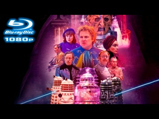
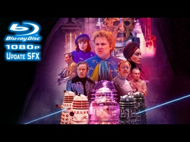
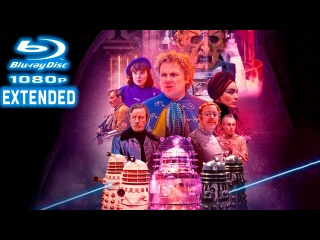
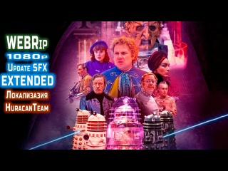
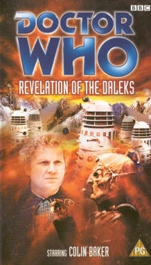
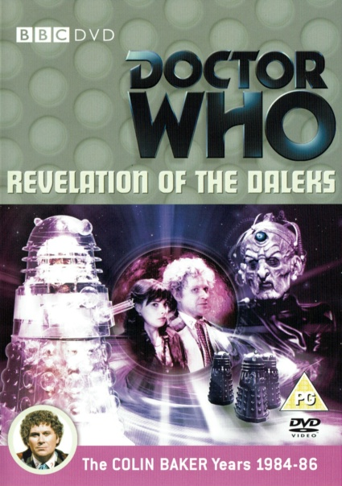
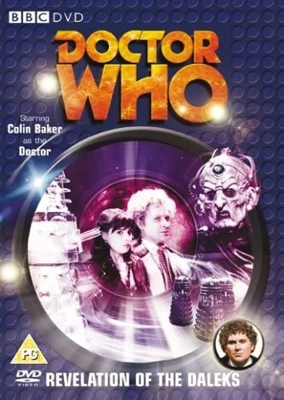
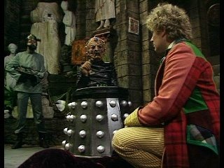

Субтитры: Русские и Английские |  |
|---|---|
с обновленными спецэффектами Субтитры: Русские и Английские |  |
+ Расширенная версия (эпизод 1) Субтитры: только Английские |  |
+ Расширенная версия (эпизод 1) с обновленными спецэффектами и фанатской локализацией видеоряда (HuracanTeam) Субтитры: только Английские |  |
Revelation of the Daleks
Дата выхода: 23-30 марта 1985
Формат: 2 эпизода по 45 мин.
ТАРДИС прибывает на планету Некрос, в похоронное бюро «Тихий покой», где богатых клиентов замораживают до лучших времён. Доктор хотел навестить старого друга, но обнаруживает, что за всем стоит Даврос — и его планы куда страшнее, чем просто бизнес на заморозке тел.
Последняя серия 22-го сезона и последняя в классическом сериале в формате 45-минутных эпизодов. Эрик Сэвард вдохновлялся романом Ивлина Во «Любимая» — сатирой на похоронный бизнес. Серия едва не стала последней в истории «Доктора Кто» — BBC поставила сериал на паузу на 18 месяцев.
  VHS - нояб.1999 / Boxset - сент.2001 |   DVD+Boxset - 11 июля 2005 |
|---|---|
 DVD переиздание - 2 июля 2007 |  Blu-ray - 20 июня 2022 * Версия в нашей группе |
